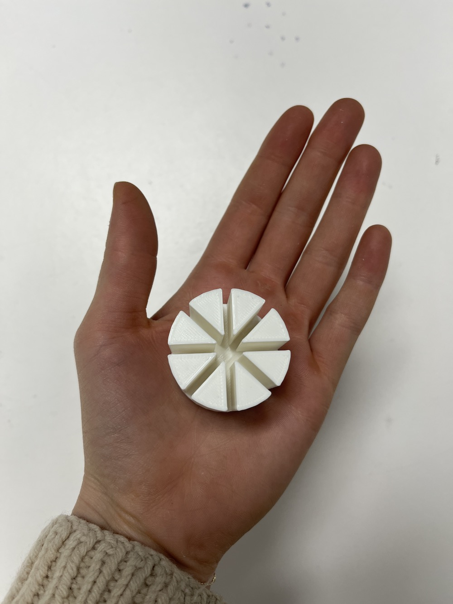
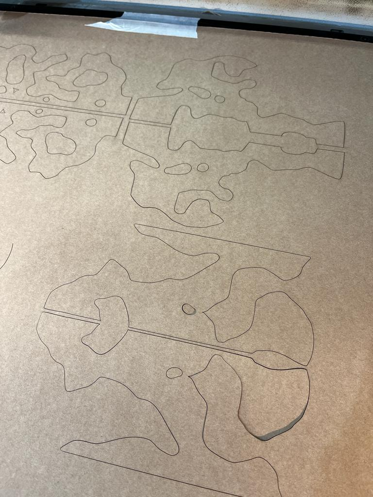
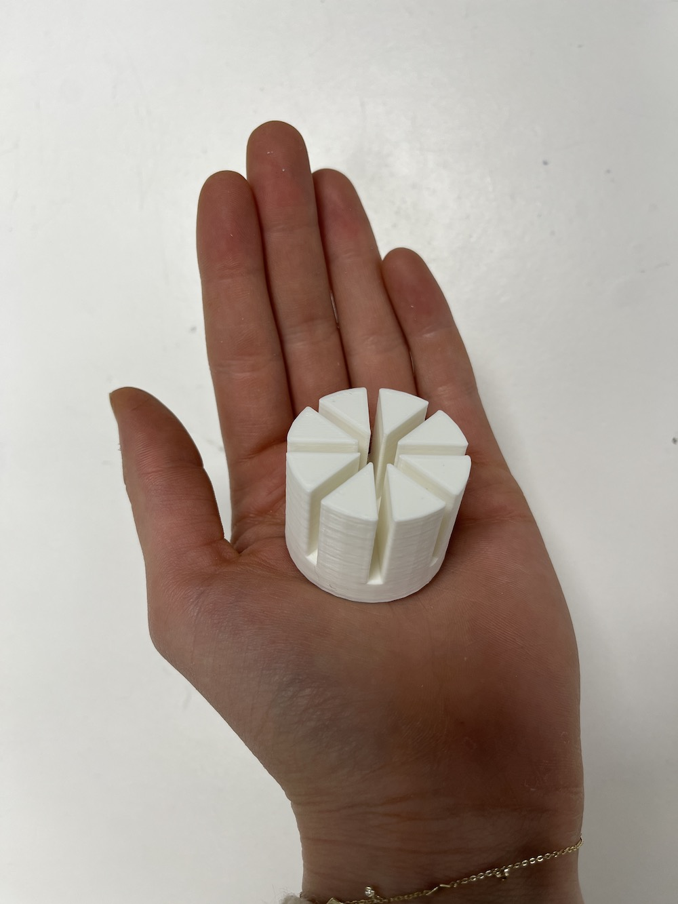
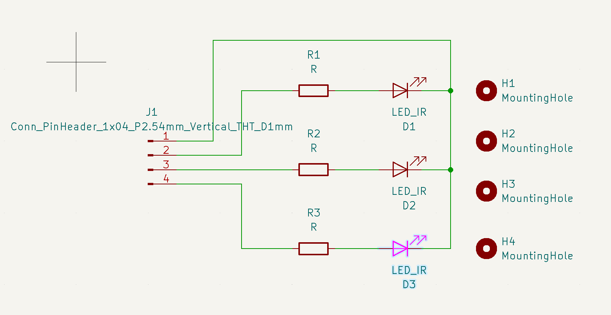
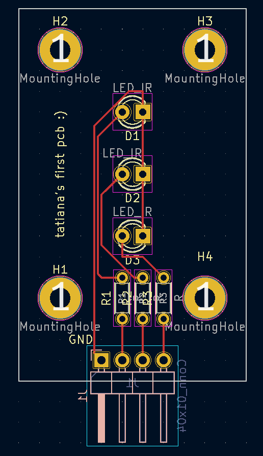
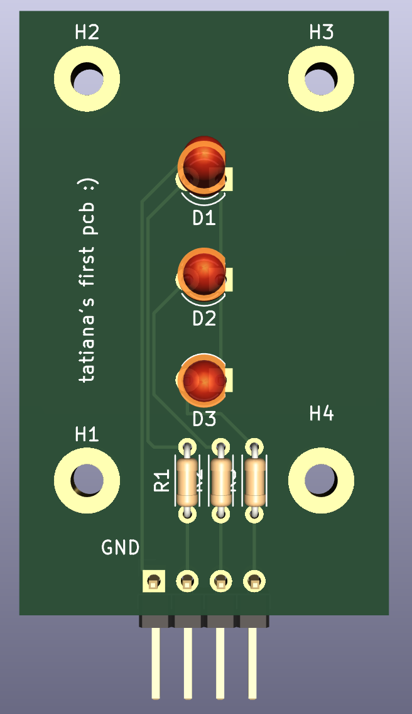
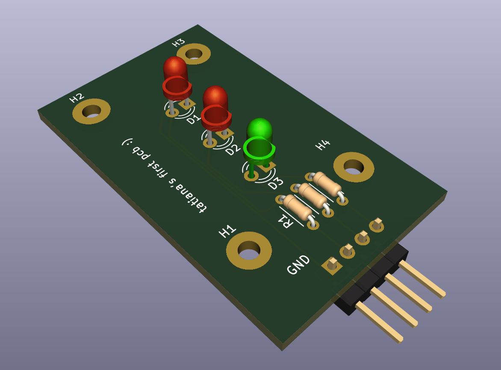

ELECTRONICS PRODUCTION
This week we had a lecture on how to design electronics and PCBs. We had an overview of various softwares we could use, mainly focusing on one called KiCad. Our assignment was to create something using this program which allowed us to connect an input (sensor) or an output (actuator) to our commercial board without cables.
As always, we had to include the design files in our webpage and explain the process on how everything was done.
I wanted to start with something simple, especially since this week I couldn’t come up with any way to integrate this project with my design interventions. If I’m being honest, I wanted to learn the basics of KiCad and get this assignment done, but mainly prioritize my work on the Design Interventions, since deadlines are creeping up on me. I spent a lot of the studio time focusing on laser cutting and 3D printing for an intervention idea I have coming up.



Since I was unfamiliar with KiCad, I decided to follow some tutorials before diving straight into constructing something. I found this very simple and well-explained tutorial on YouTube which clarified a lot of the misunderstandings I had, and guided me through the process of making a functioning board.
I settled with creating something basic yet functional: a board that could emit 3 LEDs. I also wanted it to emit sounds, but I was unsure how to connect the audio + speaker components. So I just stuck to the tutorial and personalised it by adding text on the PCB. Here is the result:




I have to say that following the tutorial really helped me get a good understanding of how the program works. Although I'm not an expert in electronic circuits and how they work, it was nice to get a grasp around the various aspects of KiCad, from the schematic editor, the symbol editor, the footprint editor, the PCB editor and even the 3D viewport. Although the project itself wasn't complex, I fully understand the functionality of the program now.
Here is the KiCad file if you would like to see the full project.